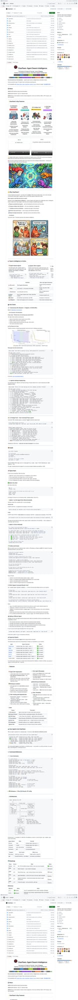
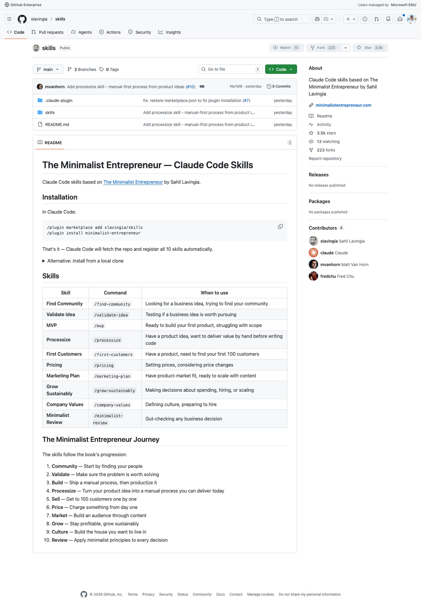
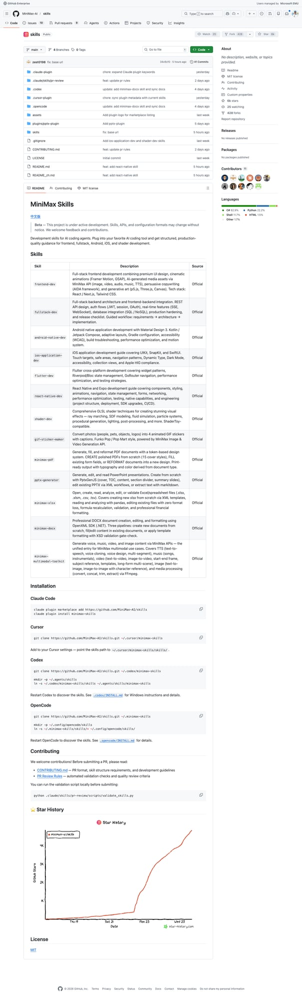
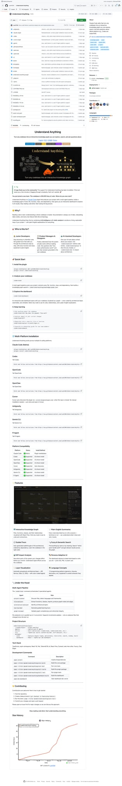
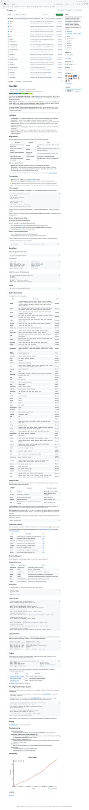

5个GitHub新星项目速报！ClawTeam、MiniMax Skills等火爆开源
Neo整理
每天凌晨，我会自动扫描GitHub Trending，筛选出60天内创建、增长最快的高潜力项目，计算"新星指数"（周增长/√总Star），为你发现下一个可能爆发的开源项目。
今天发现了5个新星项目，涵盖Agent集群智能、创业方法论Skills、AI开发技能集、代码知识图谱、通用CLI平台等热门领域。让我们一起来看看！
ClawTeam：Agent集群智能——一条命令让AI自组团队
ClawTeam 来自香港大学数据科学实验室（HKUDS），是一个让AI Agent自主组建"蜂群"协作的开源框架。它的核心理念非常直接：单个AI Agent很强，但一群AI Agent协同作战更强。在仅仅10天内就斩获了3,700+ Star，成为本周GitHub上增长最猛的新项目之一。

▲ ClawTeam GitHub 仓库截图
ClawTeam 的工作方式非常优雅：你只需给出一个目标（比如"用8块H100优化这个LLM训练"），Leader Agent 会自动拆解任务、生成子Agent、分配工作、实时协调。每个Worker Agent拥有独立的git worktree和tmux窗口，通过文件系统或ZeroMQ P2P通信，彼此之间可以发消息、共享发现、汇报进度。
这不是又一个需要你写大量YAML编排逻辑的框架——Agent自己就是编排者。Claude Code、Codex、OpenClaw、nanobot等任何CLI Agent都能无缝接入。一个典型的用例是：Leader Agent在8块H100 GPU上部署8个研究Agent，自动设计了2430+实验，将val_bpb从1.044降到0.977——全程零人工干预。
💡 为什么值得关注？
- 真正的Agent自组织：不是人类写编排代码，而是Agent自己用CLI命令（spawn、task、inbox）协调团队
- 零基础设施依赖：只需文件系统+tmux，无需Redis/Docker/云服务，状态全存JSON文件
- TOML团队模板：一条命令启动7人AI对冲基金团队（巴菲特分析师、技术分析师、风控经理……）
- 兼容一切CLI Agent：Claude Code、Codex、Kimi CLI、自定义脚本均可作为团队成员
- Web UI + tmux看板：实时监控所有Agent的工作状态，像看一群蚂蚁搬家一样有趣
ClawTeam代表了AI Agent从"单兵作战"到"集群智能"的范式转移。当前v0.3已支持文件+P2P传输、Web UI、多用户和团队模板，路线图中还有Redis传输、共享状态层和Agent市场。如果你在做需要多Agent协作的研究或工程项目，这是目前最轻量、最灵活的选择之一。
slavingia/skills：Gumroad创始人的极简创业方法论Claude Code技能包
slavingia/skills 可能是本周最"非传统"的GitHub热门项目——它不是一个软件工具，而是Gumroad创始人Sahil Lavingia将自己的畅销书《The Minimalist Entrepreneur》（极简创业者）转化成了一套Claude Code技能集。4天内狂揽3,500 Star，创下了"纯内容仓库"的增长纪录。

▲ slavingia/skills GitHub 仓库截图
这套技能包包含10个Claude Code Skills，完整覆盖了从0到1创业的全流程：/find-community（寻找社区）→ /validate-idea（验证想法）→ /mvp（构建最小可行产品）→ /processize（流程化）→ /first-customers（获取前100个客户）→ /pricing（定价策略）→ /marketing-plan（营销计划）→ /grow-sustainably（可持续增长）→ /company-values（公司价值观）→ /minimalist-review（极简审查）。
安装方式极其简单：在Claude Code中执行 /plugin marketplace add slavingia/skills 即可。每个Skill都内置了Sahil多年创业经验的决策框架——当你犹豫该不该做某个功能、如何定价、要不要融资时，这些Skill会以极简主义创业者的视角帮你思考。
💡 为什么值得关注？
- 名人效应+实用主义：Sahil Lavingia不是在卖概念，他把真金白银的创业经验结构化了
- 新型知识传播方式：从书→课程→播客→AI Skill，这是"知识产品"的下一个形态
- Claude Code生态繁荣的信号：当知名创始人亲自下场做Skill，说明这个生态已到引爆点
- 实操导向：不是空洞的理论，每个Skill都会引导你做具体的决策和行动
- 开源+可扩展：社区已在贡献新Skill（如processize来自mvanhorn），生态在自然生长
这个仓库的火爆也揭示了一个趋势：AI Agent技能生态正在成为新的"App Store"。未来不是人人学编程，而是人人写Skill——用自然语言把自己的专业知识封装成AI可执行的方法论。Sahil Lavingia的这个仓库，可能是这个时代的第一批"畅销App"。
MiniMax-AI/skills：MiniMax官方AI开发技能集——全栈开发者的瑞士军刀
MiniMax-AI/skills 是AI公司MiniMax发布的官方开发技能集合，覆盖了从前端到后端、从移动端到桌面端的全栈开发场景。这不是一个简单的代码片段仓库——每个Skill都是一套完整的、经过MiniMax内部团队验证的开发工作流，包含设计规范、架构模式、质量检查和最佳实践。

▲ MiniMax-AI/skills GitHub 仓库截图
技能集涵盖了令人印象深刻的广度：全栈前端开发（DSAR设计规范、UIUX框架、Three.js/Canvas/D3可视化）、后端集成（REST API设计、LINT会话管理、实时功能）、Android原生开发（Material Design 3、Kotlin/Jetpack Compose、MVDC架构）、iOS开发（SwiftUI、CoreData、辅助功能）、Flutter跨平台、React Native和Expo开发。甚至包括了GLSL着色器技术（光线追踪、粒子系统、程序化生成）和媒体处理（FFmpeg命令行、图片转视频）。
每个Skill都支持在Claude Code、Cursor、Codex和OpenCode中一键安装使用。MiniMax还提供了自动化验证脚本和PR审查工作流，确保社区贡献的质量。
💡 为什么值得关注？
- 企业级质量：这不是个人项目，而是MiniMax团队系统性整理的生产级开发规范
- 多平台覆盖：一个仓库搞定前端、后端、Android、iOS、Flutter、React Native、桌面……
- 实战导向：每个Skill都包含具体的架构决策、代码风格指南和质量检查清单
- 生态开放：PR格式规范、自动验证脚本，社区可以轻松贡献新Skill
- 中国AI公司的Skills战略：MiniMax在Agent生态上的布局，值得关注
MiniMax-AI/skills 的意义在于：大型AI公司正在将自己的工程经验开源为Agent Skills。这意味着未来开发者不再只是用AI生成代码，而是用AI执行经过验证的完整开发方法论。10天6,000 Star证明了市场对"高质量、结构化AI开发技能"的巨大需求。
Understand-Anything：把代码库变成可交互的知识图谱
Understand-Anything 解决了一个每个开发者都头疼的问题：快速理解一个陌生的大型代码库。它是一组Claude Code Skills，能将任何代码仓库自动转化为交互式知识图谱，你可以在图谱上浏览、搜索、提问——就像有一个对整个项目了如指掌的同事随时在旁边解答。

▲ Understand-Anything GitHub 仓库截图
它的工作流程很简单但强大：首先通过代码分析构建一个交互式知识图谱，展示模块间的依赖关系、函数调用链和数据流向；然后提供全局搜索功能，让你能用自然语言查询代码库中的任何概念；最后，你可以对图谱上的任何节点直接提问，AI会结合上下文给出准确的解释。
Understand-Anything 支持多平台运行，不仅限于Claude Code，Codex等其他AI编程工具同样可以使用。项目还包含Codified Search（结构化搜索）、GIT Project Analysis（Git项目分析）和Multi-Agent Pipeline（多Agent管线）等高级功能，能处理从小型库到企业级巨型代码库的各种规模。
💡 为什么值得关注？
- 解决真实痛点：新人入职、接手遗留项目、开源贡献——代码理解是最大的时间黑洞
- 知识图谱可视化：不是简单的代码索引，而是带有语义理解的交互式关系图
- 多平台兼容：Claude Code、Codex等都能用，不绑定特定工具
- 12天6,300+ Star：增长速度说明了开发者社区对代码理解工具的渴求
- Resource Adaptive：能根据系统资源自动调整分析深度，笔记本到工作站都能跑
代码理解一直是AI编程领域的"最后一公里"——写代码AI已经很擅长了，但读懂已有代码才是日常工作中的最大挑战。Understand-Anything 填补了这个空白，让"理解代码"变得像"浏览维基百科"一样直观。
OpenCLI：把一切网站和工具变成命令行——AI Agent的通用工具箱
OpenCLI 的愿景很疯狂但很迷人：把任何网站、Electron应用或本地二进制文件都变成标准化的命令行接口。它定位为"通用CLI Hub和AI原生运行时"——不是为了让人类更方便地用命令行，而是为了让AI Agent能发现、学习和执行任何工具。

▲ OpenCLI GitHub 仓库截图
OpenCLI 内置了对数十种服务的CLI封装：GitHub、GitLab、Figma、Notion、Slack、Discord、Twitter/X、YouTube、Spotify、AWS、GCP、Azure、Docker、Kubernetes……甚至包括 Netflix（管理你的片单）和 Uber（叫车和查看行程）。每个CLI模块都遵循统一的 AGENT.md 接口规范，让AI Agent能通过标准方式发现和使用这些工具。
它的核心创新在于AI-Native Runtime：不是简单地包装API，而是提供了一层语义理解层。AI Agent可以用自然语言描述需求（"帮我在GitHub上创建一个issue并@团队成员"），OpenCLI会自动映射到对应的CLI命令。同时它支持插件系统和自定义适配器，社区可以为任何新服务编写CLI模块。
💡 为什么值得关注？
- Agent工具生态的基础设施：解决了AI Agent"会思考但没手"的核心问题
- 统一接口标准：AGENT.md规范让不同来源的工具都能被AI统一发现和调用
- 覆盖面惊人：开发工具、云服务、社交媒体、生产力工具……几乎无所不包
- 两周7,500 Star：开发者和AI Agent建设者们的投票，说明这是刚需
- 开源+社区驱动：任何人都能贡献新的CLI模块，生态在快速扩展
OpenCLI 所代表的趋势是：未来的软件不是"AI-friendly"的，而是"AI-native"的。当每个工具都有标准化的CLI接口和AGENT.md描述时，AI Agent就能像人类使用GUI一样自由地操作整个数字世界。这可能是"Agent互联网"的早期基础设施。
📊 今日总结
| 排名 | 项目 | Stars | 新星指数 | 语言 | 关键词 |
|---|---|---|---|---|---|
| 🥇 | HKUDS/ClawTeam | 3,713 | 60.9 | Python | Agent集群智能 |
| 🥈 | slavingia/skills | 3,494 | 59.1 | Markdown | 极简创业Skills |
| 🥉 | MiniMax-AI/skills | 5,982 | 51.7 | C# | 全栈开发技能集 |
| 4 | Lum1104/Understand-Anything | 6,367 | 37.6 | TypeScript | 代码知识图谱 |
| 5 | jackwener/opencli | 7,520 | 34.6 | TypeScript | 通用AI CLI |
🔍 今日观察
今天的Top 5呈现出一个非常清晰的主题：Agent Skills生态正在爆发。5个项目中有3个直接与"Skills"相关（slavingia/skills、MiniMax-AI/skills、Understand-Anything），1个是Agent集群基础设施（ClawTeam），1个是Agent工具接口标准（OpenCLI）。
这意味着AI Agent的竞争正从"谁的模型更强"转向"谁的技能生态更丰富"。就像智能手机时代的App Store决定了iOS vs Android的胜负一样，Agent时代的Skills生态将决定哪个平台最终胜出。
另一个值得注意的趋势：非代码仓库也能成为GitHub热门。slavingia/skills几乎没有代码，全是Markdown文档——但4天3,500 Star。这预示着GitHub正从"代码托管平台"向"知识+技能托管平台"进化。